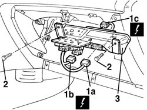
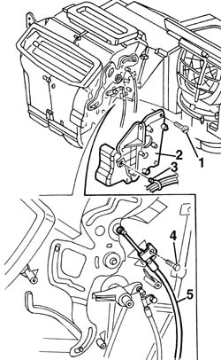
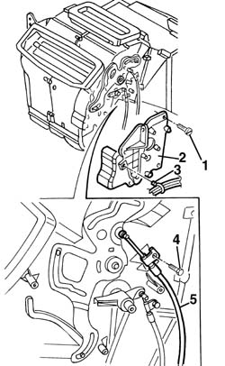

5020B31 air distribution flap control cable(one) - r r
- Path
- Procedures > 50 AUXILIARY UNITS > 5020 HEATER > 5020B heater controls > 5020B31 air distribution flap control cable(one) - r r
- Kind
- repair procedure (removal / refitting; the operation number is the code)
- Applies to
- all engines; all production periods
- Interactive page
- https://sloeber94.github.io/elrnDB-a156/en/#/3238290
Applies to: all engines; all production periods
 Removing
Removing
 Refitting
Refitting7040A65 passenger compartment box lock , one , r r (right and left site)
5040D22 control (one) of air conditioner control support - arrange
2125C24 gear lever knob - r + r
7040A60 under facia trim - r+r
3380A44 handbrake/linkage protection - r+r
7040L28 tunnel switch panel - r r
5020B10 heater control support - r+r
7040G24 switch for facia compartment light - r+r
7040G20 facia compartment light bulb holder - r+r
7040A14 flap of glove compartment trim element (one) - arrange
7040A09 passenger air bag compartment cover - r r
5580C22 AIR BAG MODULE - Passenger side - R.R.
5560C51 combined analogue control panel - r+r or replace
1. Disconnect the electric connections (1a, 1b, 1c) of the central integrated services
 | Name | Connector |
|---|---|---|
1a | Integrated services control unit |
| Name | Connector |
|---|---|---|
1b | Integrated services control unit |
| Name | Connector |
|---|---|---|
1c | Integrated services control unit |
2. Loosen the screws of the flask central-tray and relè
3. Remove the flask central-tray and relè

Applies to: all engines; all production periods
1. With a flexible screwdriver, loosen the screws
2. Remove the protection
3. Disconnect the clamp of the protection cable beam
4. Loosen the fixing screw of the transmission command
5. Remove the transmission command of the air distribution door

Applies to: all engines; all production periods
Refitting
RemovingVerify that the transmission command has no damages
Replace the transmission command of the air distribution door
Tighten the fixing screwsof the transmission command
Connect the clamp of the protection cable beam
Remove the protection
With a flexible screwdriver, tighten the screws
Install the falsk central- tray and relè
Tighten the screws of the flask central-tray and relè
Connect the electric connection of the derivation central
5560C51 combined analogue control panel - r+r or replace
5580C22 AIR BAG MODULE - Passenger side - R.R.
7040A09 passenger air bag compartment cover - r r
7040A14 flap of glove compartment trim element (one) - arrange
7040G20 facia compartment light bulb holder - r+r
7040G24 switch for facia compartment light - r+r
Verify the functionality of the air distribution command
7040L28 tunnel switch panel - r r
3380A44 handbrake/linkage protection - r+r
7040A60 under facia trim - r+r
2125C24 gear lever knob - r + r
5040D22 control (one) of air conditioner control support - arrange
7040A65 passenger compartment box lock , one , r r (right and left site)
Applies to: all engines; all production periods; only with equipment: Right hand drive and Heater
Removing
Refitting7045A10 l/h or r/h front seat (one) - r+r (driver's side)
1. Use a flexible screwdriver to unscrew the bolts.
2. Remove the protection
3. Disconnect the wiring harness collar from the protection
4. Undo the cable control retaining bolts
5. Remove the air distributor flap cable control

Applies to: all engines; all production periods; only with equipment: Right hand drive and Heater
Refitting
RemovingCheck that the cable is undamaged.
Reposition the transmission cable for the air distribution flap.
Tighten the cable bolts.
Connect the wiring harness collar to the protection.
Refit the protection.
Use a flexible screwdriver to do up the bolts.
Check that the air distribution control works properly.
7045A10 l/h or r/h front seat (one) - r+r (driver's side)
Topics linked from this page (22)
- 2125C24 gear lever knob - r + r
- 3380A44 handbrake/linkage protection - r+r
- 5020B10 heater control support - r+r
- 5040D22 control (one) of air conditioner control support - arrange
- 5520B10 starter motor - r+r
- 5560C51 combined analogue control panel - r+r or replace
- 5570T80 car radio unit - r+r
- 5580C22 AIR BAG MODULE - Passenger side - R.R.
- 7040A09 passenger air bag compartment cover - r r
- 7040A14 flap of glove compartment trim element (one) - arrange
- 7040A31 flap assembly - r r
- 7040A60 under facia trim - r+r
- 7040A65 passenger compartment box lock , one , r r
- 7040G20 facia compartment light bulb holder - r+r
- 7040G24 switch for facia compartment light - r+r
- 7040L20 tunnel trim - r r
- 7040L28 tunnel switch panel - r r
- 7045A10 l/h or r/h front seat (one) - r+r
- 7065C42 ashtray (one) r+r
- M40A Integrated services control unit ( REAR )
- M40B Integrated services control unit ( REAR )
- M40C Integrated services control unit ( FACIA )